Maya-xgen制作总结#
1. Maya版本#
尽可能保持从制作到最终渲染xgen的Maya版本一致，包括maya的小版本（例如2018.6和2018.7），版本的问题也会导致最后渲染的时候，出现xgen拉丝的情况
2. xgen创建#
a. 指定xgen路径#
可以指定相对路径或者绝对路径，如果是相对路径需要在渲染的时候指定一下相对路径的位置，建议是使用绝对路径问题比较少，绝对路径只是不利于迁移数据需要重新指定而已
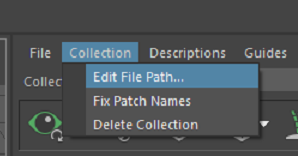
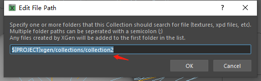
b. xgen的生长面#
不要直接在模型上面制作，尽量复制模型并裁剪出需要生长xgen的部分面来制作，生长面需要UV展好并合理，后续的制作环节不能再去修改或者改变生长面 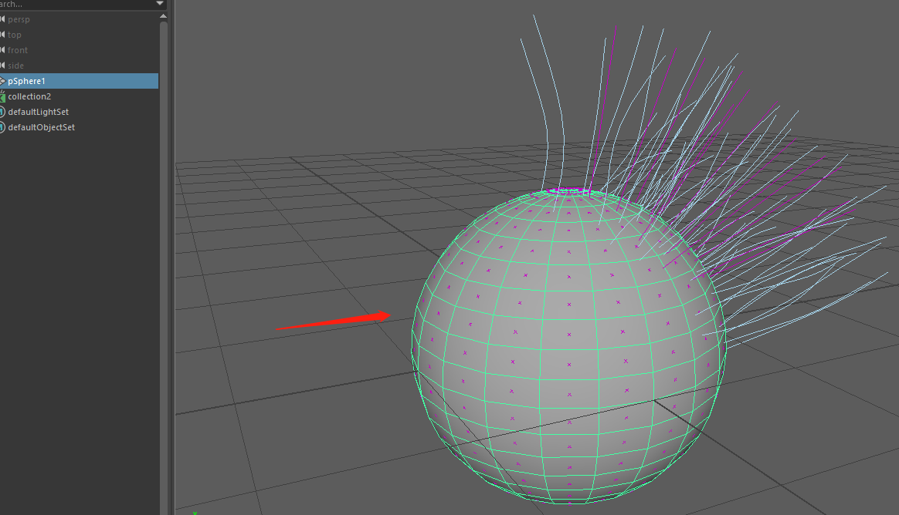
c. 制作xgen的节点一定要使用烘焙#
制作过程中的所有节点，不要使用live模式，一定要使用baked模式，把效果烘焙成文件再读取回来
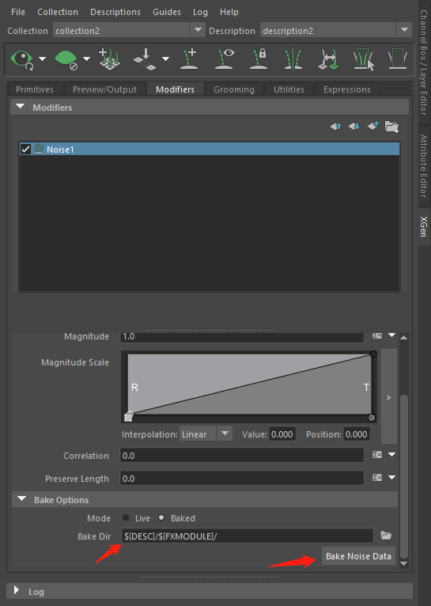
d. xgen的表达式问题#
不要在表达式窗口使用${DESC}变量，xgen存在bug在表达式窗口无法正常读取到${DESC}变量指向的description节点，所以在表达式窗口不要使用${DESC}变量
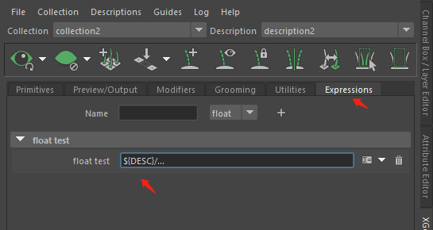
在其他的窗口属性就可以正常的使用
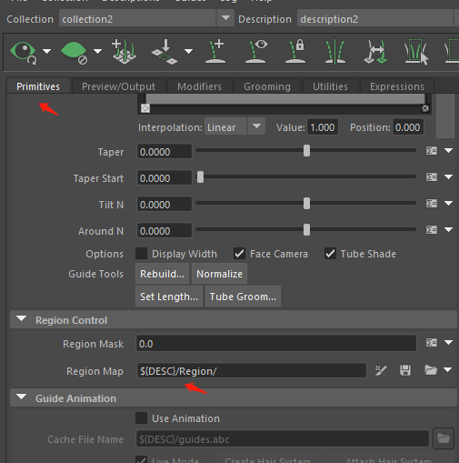
e. 使用Guide Check节点检查#
该节点可以检查出xgen的引导曲线是否重叠或者两者位置比较靠近，在xgen制作完成之后必须要使用给节点进行xgen的检查，检查出有问题的引导曲线，也要删去或者修改，直到check没问题
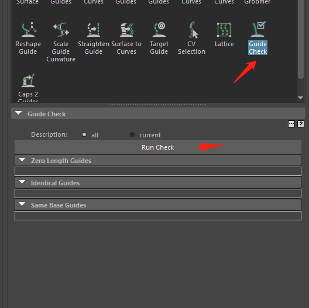
3. xgen绑定#
直接对生长面蒙皮或者使用blendShape都可以
如果要绑定xgen的引导线，建议是绑定xgen的创建的hair system的输出曲线，绑定输出曲线，动画做完后，再把输出曲线导出abc让xgen使用；如果是直接绑定用xgen导线，可能会造成一些问题

4. xgen的解算#
使用Create Hair System创建nhair系统，通过对nhair系统来解算，解算完成之后把xgen的输出曲线导出abc，然后再指定回xgen读取 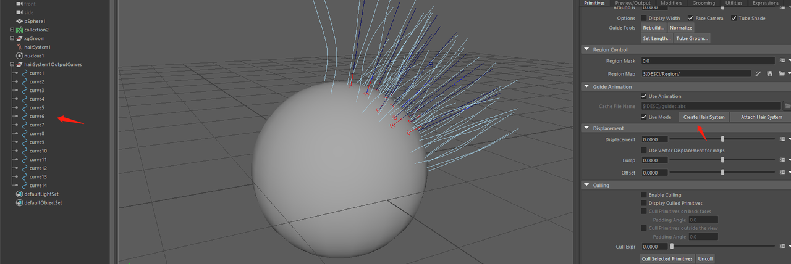
导出，导出的时候一定要和原来解算的帧率一致 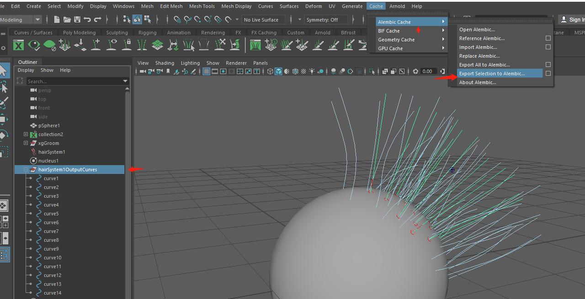
指定xgen读取动画abc，不要使用live Mode 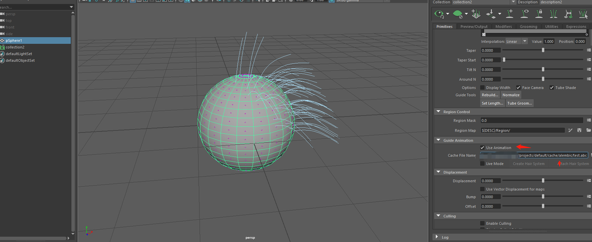
5. xgen的渲染#
需要导出xgen批量渲染abc，每一个渲染文件都要导出
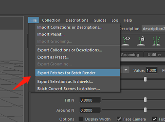
快速导出技巧：能帮助快速导出gen批量渲染abc 关闭实时更新和隐藏xgen、隐藏xgen引导线、不显示所有的物体
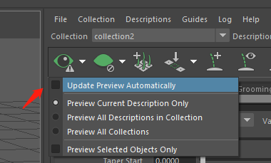
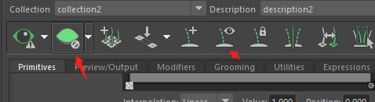
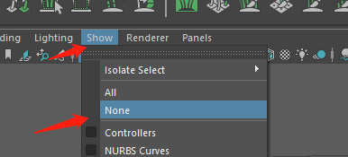
交互式xgen也需要在渲染前导出缓存
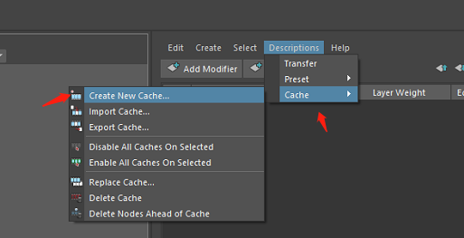
6. 无法正常读取.xgen文件#
大部分无法正常读取.xgen文件，可以检查一下打开文件的过程是否存在报错的语句，如果报一些插件的错误，可能是在制作的时候，该电脑maya安装了某个插件，但在其他电脑打开时，因为没有配置该插件就无法正常读取.xgen文件；例如：redshift插件等
大部分无法正常读取.xgen文件都是因为maya打开过程的某些插件或者脚本或文件无法正常读取加载，从而导致无法正常读取到.xgen文件，所以一定要分析打开过程的报错语句